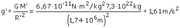
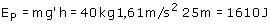
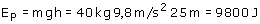

Una altura de 25 m es despreciable en comparación con los radios de Tierra y Luna, por tanto se puede tomar el origen de potencial en la superficie del planeta
Empezaremos calculando la intensidad del campo gravitatorio (g') en la superficie lunar:


Cuando la masa suba 25 m el campo gravitatorio lunar realizará un trabajo de -1600 J por tanto para subir el cuerpo habrá que hacer un trabajo de 1600 J
En la Tierra:

Cuando la masa suba 25 m el campo gravitatorio terrestre realizará un trabajo de -9800 J por tanto para subir el cuerpo habrá que hacer un trabajo de 9800 J (6,125 veces más que en la Luna)